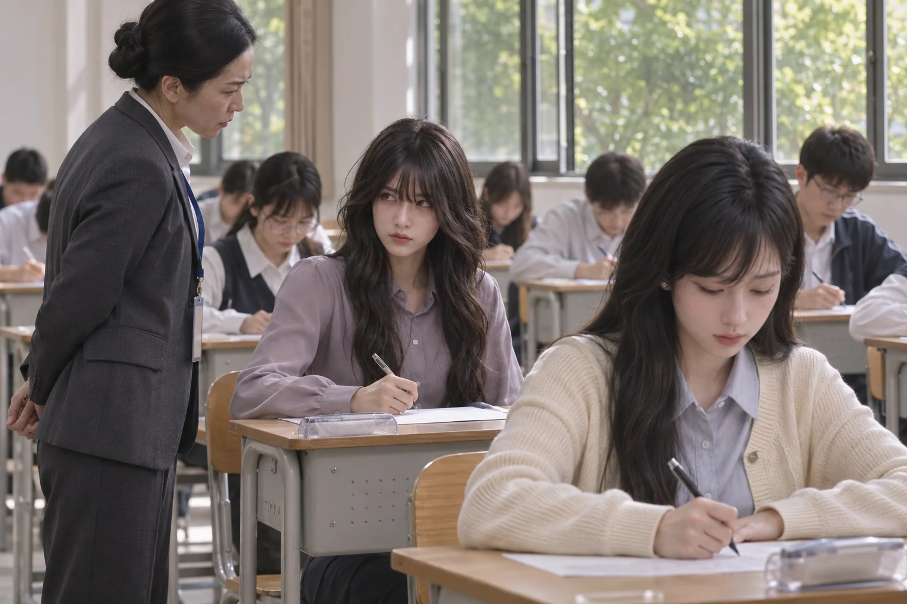
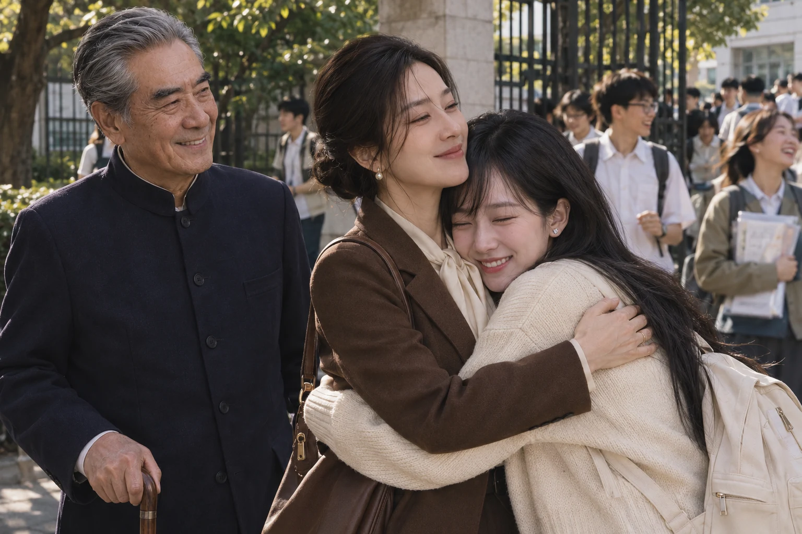
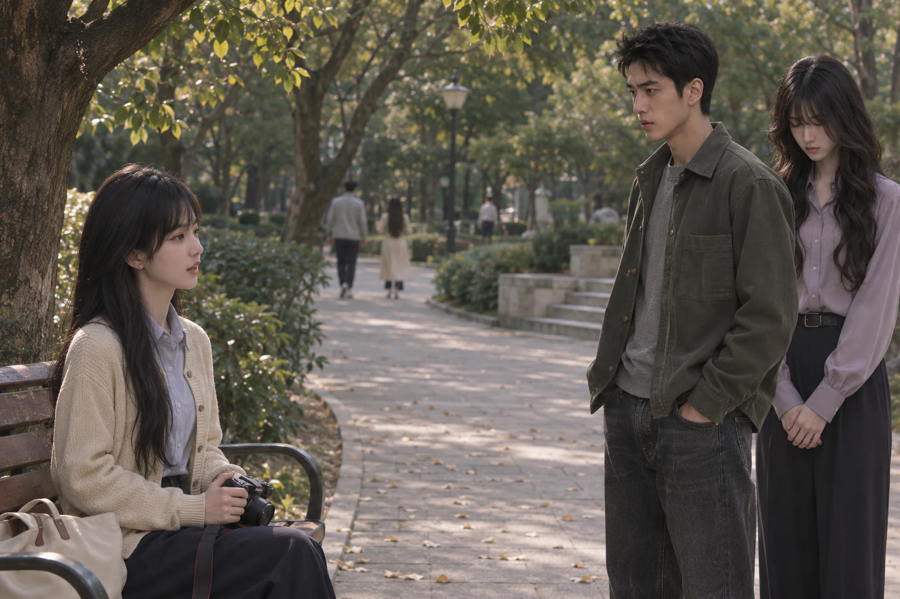
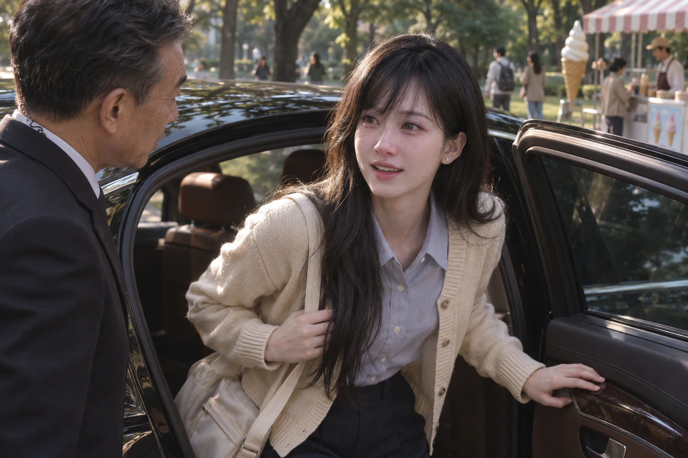

ตอนที่ 12
ตาชั่งเอนเอียง
การสอบวันที่สองเริ่มขึ้นอีกครั้ง เด็กหนุ่มสาวรู้สึกว่าวันนี้กดดันน้อยกว่าวันแรก เนื่องจากเป็นวิชาที่พวกเขาสามารถเลือกได้ด้วยตัวเอง ตามสายที่ต้องการจะเรียน
ซ่งอวิ๋นตั้งใจเรียนบริหารธุรกิจ เพื่อบริหารธุรกิจครอบครัวในอนาคต จึงเลือกสอบวิชาฟิสิกส์ ภูมิศาสตร์ และการเมือง แต่กล่าวกันตามตรง หากเธอไม่มีธุรกิจของครอบครัวรองรับ เธออยากเป็นผู้กำกับ หรือช่างภาพ เพราะชอบด้านนี้มาตั้งแต่เด็ก ๆ จนคุณปู่สร้างแกลเลอรีสำหรับเก็บภาพถ่ายไว้ที่บ้านโดยเฉพาะ
ขณะที่ซ่งอวิ๋นโฟกัสกับการสอบ เธอรู้สึกได้ตลอดเวลาว่าแผ่นหลังเธอถูกสายตาน่าขนลุกจ้องมองมาเรื่อย ๆ หญิงสาวทอดถอนใจ เธอยังไม่รู้เลยว่าตัวเองทำสิ่งใดผิด อีกฝ่ายถึงได้เคียดแค้นถึงขนาดอยากให้เธอตาย ๆ ไปเสีย
ซ่งหว่านกระตุกยิ้มมุมปาก ตอนนี้ทุกอย่างยังอยู่ในการควบคุมของเธอ เจียงเซินเชื่อทุกคำที่เธอบอกเล่า ขณะซ่งเหวินแทบจะถูกซ่งเต๋อตัดหางปล่อยวัดแล้ว ซึ่งเธอยินดีอย่างยิ่งที่เป็นเช่นนั้น เขาควรตายโดยไร้หลุมฝังเสียด้วยซ้ำ
“คุณซ่ง.. ทำข้อสอบเสร็จแล้วเหรอ” กรรมการผู้คุมสอบเดินมาหยุดหน้าโต๊ะของซ่งหว่าน ถามเสียงเคร่งขรึม
“ใกล้เสร็จแล้วค่ะ” ซ่งหว่านหุบยิ้ม ยืดหลังตรง ตอบเสียงดังฟังชัด
“งั้นแสดงว่ายังไม่เสร็จ.. ผมเห็นคุณมัวแต่ยิ้มน้อยยิ้มใหญ่ สงสัยข้อสอบปีนี้ง่ายเกินไป” ผู้คุมสอบเลิกคิ้วแล้วเดินผ่านไป
ซ่งหว่าน “...”
เขาเพ่งเล็งเธอทำไม เธอยิ้มก็เป็นสิทธิ์ของเธอไม่ใช่เหรอ
อันที่จริงผู้คุมสอบสังเกตเห็นว่าซ่งหว่านมองผู้เข้าสอบด้านหน้าหลายครั้ง และมันไม่ใช่สายตาที่ดีนัก เขาไม่สนใจว่าผู้เข้าสอบบาดหมางกันด้วยเรื่องใด แต่เขาเกรงว่าจะสร้างปัญหาและก่อความวุ่นวายในห้องสอบ

ซ่งอวิ๋นไม่ได้หันไปมองว่าเกิดอะไรขึ้น เธอง่วนอยู่กับข้อสอบการเมืองจนไม่สามารถโฟกัสสิ่งอื่น เสียงพลิกกระดาษดังให้ได้ยินสลับกับเสียงหายใจภายในห้อง
กระทั่งการสอบวิชาเลือกทั้งสามวิชาจบสิ้นลง ผู้เข้าสอบแต่ละคนต่างอ่อนเปลี้ยเพลียแรง ลากร่างกายอ่อนล้าออกจากห้องสอบแต่ใบหน้ากลับสดใสกว่าก่อนสอบอย่างมาก
“เสี่ยวอวิ๋นเป็นยังไงบ้างลูก เหนื่อยหรือเปล่า อยากกินอะไรเป็นพิเศษไหม” โจวจิ่วอ้าแขนรับลูกสาวที่วิ่งแล้วโถมกายเข้ามากอดแน่น
“วันนี้ไม่เหนื่อยเท่าไหร่คะ หนูอยากกินพระกระโดดกำแพง คุณปู่กับคุณแม่พาไปกินหน่อยได้ไหมคะ”
“ตกลง เราจะไปกินพระกระโดดกำแพงกัน” ผู้เฒ่าซ่งตามใจหลานสาว หางตาเห็นลูกชายคนโตยืนอยู่ไกล ๆ

วันนี้อีกฝ่ายไม่ได้เข้ามาสร้างความหงุดหงิดใจให้เขา แต่เมื่อเช้าก็มาอวยพรให้ซ่งอวิ๋นก่อนสอบ
เห็นได้ชัดว่าความรู้สึกของหลานสาวเขาไม่เหมือนเดิม ความรักและเคารพในตัวผู้เป็นพ่อเลือนหายไปทุกวัน แม้ยังเสียใจแต่กลับไม่โหยหาความรักจากซ่งเหวินอีกแล้ว
...
หลังการสอบเพียงไม่กี่วัน ซ่งอวิ๋นคว้ากล้องตัวโปรดออกไปถ่ายภาพในสวนสาธารณะใกล้บ้าน มันคืองานอดิเรกที่เธอชอบทำยามต้องการผ่อนคลายจากความรู้สึกหนักอึ้งในอก
ซึ่งเธอมาที่นี่บ่อยจนกระรอกเชื่องกับเธอแล้ว ทุกครั้งที่เธอตั้งกล้องถ่ายรูป มันก็จะปีนลงมาจากต้นไม้ คล้ายจะบอกว่า ‘ถ่ายฉันสิ ๆ’ บางตัวเชื่องถึงขนาดปีนขึ้นมาบนไหล่เธอ
“ไง ไม่เจอกันสองอาทิตย์ กินจนอ้วนขึ้นแล้วนะ” ซ่งอวิ๋นทักทายกระรอกตัวหนึ่ง มันกำลังแบกพุงโต ๆ ไต่ขึ้นมาบนตัวเธอ ในปากยังอมอาหารไว้จนแก้มพอง
เจ้าตัวเล็กร้องเบา ๆ ทำจมูกฟุดฟิดอย่างน่ารัก ซ่งอวิ๋นใจละลาย แต่ไม่อุ้มหรือแตะตัวมัน เกรงว่าจะทำให้เจ้าตัวจิ๋วเจ็บ
“ช่วงนี้ฉันรู้สึกแย่มากเลย นอนไม่ค่อยหลับด้วย” ซ่งอวิ๋นระบายให้กระรอกน้อยฟังพลางถอนหายใจหนัก ๆ
ต่อให้รู้เหตุการณ์ล่วงหน้า แต่เธอเป็นแค่เด็กที่กำลังจะก้าวเข้าไปอยู่ในรั้วมหาวิทยาลัย เธอพร้อมสู้เพื่อปกป้องคนที่เธอรัก แต่เรื่องของพ่อยังคงกระทบกระเทือนความรู้สึกทุกครั้งที่นึกถึง
ต่อหน้าแม่เธอทำเหมือนไม่เป็นไร แต่ในหัวกลับมีคำถามมากมาย ทุกอย่างต้องใช้เวลา เธอก็หวังว่าเวลาแห่งความบอบช้ำนี้จะผ่านไปเร็ว ๆ
“นั่น.. ทำไมคุณซ่งถึงมานั่งที่นี่คนเดียว”
ซ่งอวิ๋นหัวคิ้วกระตุก หันไปตามต้นเสียง รูม่านตาพลันหดเล็กลง เพราะคนที่ยืนอยู่กับซ่งหว่านคือพี่รองเจียงเซิน ครั้นได้ยินสรรพนามที่ซ่งหว่านใช้เรียกขานเธอ หัวคิ้วเขาพลันขมวดมุ่น
“ทำไมถึงเรียกแบบนั้น ยังไงก็พี่น้องกันนะ” ชายหนุ่มทำท่าจะเดินนำน้องสาวเข้าไปหาซ่งอวิ๋น แต่ถูกซ่งหว่านคว้ามือไว้ พลางส่ายหน้าอย่างลำบากใจ
“อย่าค่ะพี่รอง ฉันไม่อยากให้เธอรู้สึกไม่ดี”
“ไม่เป็นไร น้องสี่ไม่ใช่คนใจแคบ ถ้าคุยด้วยเหตุผล น้องสี่ต้องเข้าใจแน่” พูดจบก็ดึงซ่งหว่านเข้าไปหาซ่งอวิ๋นโดยไม่ฟังคำคัดค้านใด ๆ อีก
ซ่งอวิ๋นบีบกล้องในมือแน่น เขาเลื่อนให้เธอเป็นน้องสี่ นี่มันไม่ต่างจากในความฝันเลยสักนิด
“น้องสี่ มาถ่ายรูปที่นี่อีกแล้วเหรอ ได้รูปสวย ๆ เยอะเลยใช่ไหม”
“ค่ะ” แววตาซ่งอวิ๋นเย็นชาขึ้นอย่างเห็นได้ชัด แต่เจียงเซินยังไม่รู้สึกตัว
“เสี่ยวอวิ๋น.. เรื่องของผู้ใหญ่ พวกเราอย่าเก็บมาเป็นอารมณ์เลยนะ ยังไงก็เป็นพี่น้องกัน พี่รู้ว่าเธอยังเจ็บปวด แต่มันไม่ใช่ความผิดของอาหว่าน ที่ผ่านมาอาหว่านต้องอยู่ในฐานะที่กลืนไม่เข้าคายไม่ออก ก็ลำบากพออยู่แล้ว”
เจียงเซินคิดว่าตัวเองไกล่เกลี่ยโดยพูดตามหลักความเป็นจริง ไม่ได้ลำเอียงเข้าข้างฝ่ายใดฝ่ายหนึ่ง ด้วยตลอดหลายวันที่ผ่านมาเขาได้พูดคุยกับน้องสาวคนโต จึงรู้ว่าก่อนหน้านี้เธอใช้ชีวิตอย่างยากลำบาก ต้องหลบ ๆ ซ่อน ๆ ลุงใหญ่ไม่เคยเป็นร่วมในวันสำคัญของเธอเลย
ขณะเดียวกันซ่งอวิ๋นอยู่ท่ามกลางความอบอุ่น ไม่เคยขาดสิ่งใดเลย มีพ่อและแม่อยู่พร้อมหน้า ได้รับการเอาอกเอาใจเป็นอย่างดีจากคุณตาซ่ง เขาจึงรู้สึกว่าซ่งอวิ๋นไม่ควรใจแคบกับพี่สาวเกินไป
“ขอโทษนะพี่รอง ที่ฉันจะพูดอาจแรงไปสักหน่อย” ซ่งอวิ๋นยิ้มไปไม่ถึงดวงตา แม้รู้ว่านี่เป็นสิ่งที่ต้องเจอ แต่พอมาถึงจริง ๆ ก็ทิ่มแทงความรู้สึกของเธอไม่น้อยเลย
“พี่คิดว่าถ้าพูดแล้วทำร้ายความรู้สึกคนอื่น เธอก็ไม่ควรพูดนะ” เจียงเซินนึกว่าน้องสาวคนเล็กจะต่อว่าซ่งหว่าน เขาจึงรีบออกตัวไม่ให้เธอพ่นมันออกมา
ซ่งอวิ๋นไหวไหล่ “ถ้าจู่ ๆ วันนึงอาเขยรองก็เอาลูกชายนอกสมรสที่อายุมากกว่าพี่รองไม่กี่เดือนมาเปิดตัวในวันสำคัญของตัวเอง พี่รองจะญาติดีกับลูกนอกสมรสได้จริง ๆ เหรอ”
“...” เจียงเซินสะอึก เขาไม่เคยฉุกคิดถึงมุมนี้ แต่ในทางกลับกันก็รู้สึกว่าซ่งอวิ๋นจะพูดจารุนแรงกับเขาเช่นนี้ ที่ผ่านมาเธอเป็นเด็กดีในสายตาเขามาตลอด ไม่นึกว่าลึก ๆ แล้วมีนิสัยที่เอาความคิดตัวเองเป็นที่ตั้ง
“พี่รองคงกำลังรู้สึกว่าฉันพูดแรงเกินไป แต่ถ้าเรื่องแบบเดียวกันนี้เกิดขึ้นกับพี่รอง ก็คงรับไม่ได้เหมือนกัน พี่รองอย่าทำตัวผดุงความยุติธรรมถ้าตาชั่งในใจพี่รองมันเอียง”

“อาอวิ๋น” ชายหนุ่มนิ่วหน้า ความรู้สึกติดลบมากยิ่งขึ้น “ทำไมกลายเป็นแบบนี้ไปได้
หญิงสาวไม่สนใจ เลื่อนสายตาไปมองซ่งหว่าน ตั้งใจจะขีดเส้นให้ชัดเจน “ฉันว่าพวกเราต่างคนต่างอยู่ น้ำบ่อไม่ยุ่งกับน้ำคลอง ฉันไม่ได้หาเรื่องคุณ จะไม่เอาคุณไปพูดไม่ดีต่อหน้าคนอื่น แต่อย่าสร้างความลำบากใจด้วยการเข้ามาใกล้ฉันอีก”
“ฉันเข้าใจค่ะ ขอโทษจริง ๆ นะคะที่ทำให้คุณลำบากใจ” ซ่งหว่านค้อมศีรษะน้อย ๆ
ซ่งอวิ๋นรู้ดีว่าอีกฝ่ายต้องการสร้างความแตกแยก แต่สำหรับพี่รองแล้ว เธอไม่เห็นหนทางที่จะดึงสติเขากลับมา เพราะเขามองเธอในแง่ลบไปแล้ว ดังนั้นเรื่องนี้ต้องปล่อยเลยตามเลย เธอจึงขีดเส้นความสัมพันธ์เสียเลย
“อาอวิ๋น ที่ผ่านมาก็ได้ความรักจากทุกคนจนล้นแล้วนะ เธออย่าทำตัวเหมือนเด็กมีปัญหาได้ไหม”
“พี่รอง.. ที่ฉันยังเรียกว่าพี่รองอยู่เพราะในใจยังนับว่าพี่เป็นพี่ชายแท้ ๆ แต่ถ้าพี่ล้ำเส้นเกินไป ขอโทษถ้าฉันจะไม่เกรงใจ”
“เธอกล้า..”
ซ่งอวิ๋นเก็บกล้องเข้ากระเป๋า แล้วเดินจากมาทันที หญิงสาวลูบปลายจมูกระหว่างกลับไปที่รถยนต์ กรอบตาเธอร้อนผะผ่าว อยากร้องไห้แต่เธอจุกจนร้องไม่ออก
“เกิดอะไรขึ้นครับคุณหนู” ลุงคนขับรถถามอย่างไม่สบายใจ ทุกครั้งที่คุณหนูได้ถ่ายรูป เธอมักจะกลับมาพร้อมความสดใส แต่ครั้งนี้ต่างออกไป เธอดูหม่นหมองเหมือนกำลังสูญเสียบางสิ่งบางอย่าง
“ไม่มีอะไรมากหรอกค่ะลุง พาหนูไปซื้อไอศกรีมแล้วกลับบ้านกันค่ะ” ซ่งอวิ๋นพยายามปรับอารมณ์ให้กลับมาเป็นปกติ ตอนนี้ร่างกายเธอต้องการของหวาน อารมณ์จะได้ดีขึ้น

“ได้ครับ”
ด้านเจียงเซินและซ่งหว่านยังคงอยู่ในสวนสาธารณะ เพราะหลังจากที่ซ่งอวิ๋นเดินจากไป ซ่งหว่านก็น้ำตาคลอเบ้า พร่ำโทษตัวเองที่เกิดมาเป็นสาเหตุให้ครอบครัวคนอื่นแตกแยก ถึงขนาดพูดว่าตนควรตายไปพร้อมมารดา
“อาหว่านใจเย็น ๆ เธอต้องคิดว่าตัวเองเลือกเกิดไม่ได้ อย่าโทษตัวเองถึงขั้นคิดสั้นแบบนี้” เจียงเซินเห็นใจซ่งหว่านมากขึ้นกว่าเดิม ความรู้สึกที่มีต่อซ่งอวิ๋นยิ่งติดลบมากขึ้นด้วยเช่นเดียวกัน
หากซ่งอวิ๋นใจกว้างสักหน่อย คนที่ไม่มีความผิดอย่างซ่งหว่านก็คงไม่ต้องจมอยู่กับความรู้สึกเสียใจและโทษตัวเองตลอดเวลาเช่นนี้